この文書 はOpen Platform of Transparent Analysis Tools for functional near infrared spectroscopy (Open PoTATo)にのステップガイドです。
ここでは典型的な実行例を通して Open PoTATo の基本的な操作を説明します。
Open PoTAToには簡単に解析ができるNormalモードと、解析方法をカスタマイズできるResearchモードの2つのモードがあります。解析モードはメニューから簡単に切り替えることができます。
I) 解析してみようではOpen PoTAToを起動し、Normal モードによる基本的な解析フローによってグラフを表示するところまでを試してみましょう。
II) 解析方法のカスタマイズではResearch モードで解析手法をカスタマイズする例を示します。Open PoTAToは解析手順を記述したものを**Recipe(レシピ)**と呼びます。例では1つの実験データを解析するためのRecipeの作成や編集の方法を示します。
Open PoTATo は様々なfNIRS装置から出力されたデータを読み込むことが可能です。 また、それらの実験データを簡単な操作で解析することができます。 ここでは、Normal モードによる最もシンプルな Open PoTATo の操作方法を説明します。 ここでは、Open PoTAToの起動、プロジェクトの作成、実験データの読み込み、解析の選択、結果の表示を行います。
まず、MATLABを起動します。
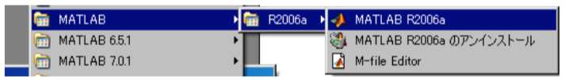
MATLABの起動画面が表示されますので、起動が完了するのを待ちます。 MATLABが起動したら、Open PoTAToをインストールしたディレクトリに移動します。次にCommand Window上で、P3とタイプし、Enterキーを押してください。
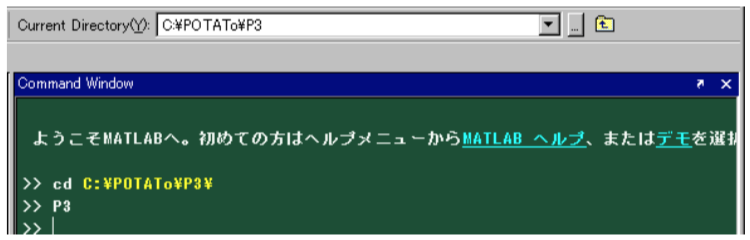
その結果、Open PoTAToが起動します。
Open PoTATo で扱うデータはプロジェクトと呼ばれる単位で管理されます。プロジェクトは解析対象とする実験データをひとまとめにしたものです。例えば、実験テーマごとにプロジェクトを作成すると、データを管理しやすくなるかもしれません。
まず、プロジェクトの作成方法について説明します。プロジェクトを作成するには、プロジェクトが開いていない状態で Make Project ボタン(A)を押します。
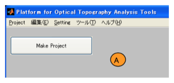
このとき、プロジェクト作成ウィンドウが表示されますので、プロジェクトに関する情報を設定します。 ここでは、Project Name エディットテキスト(A)にtest と記入し、New ボタン(B)を押します。 その結果、プロジェクトが作成され、実験データが読み込み可能になります。
作成したプロジェクトにはデータがまだ含まれていません。このプロジェクトに実験データを読み込みます。Open PoTATo では実験データの読み込みをインポートと呼びます。このプロジェクトに実験データをインポ ートするために Import Data ボタン(A)を押します。

その結果、Data Import ウィンドウが現れます。 最初にインポートする実験データを選択します。先ず Add file(s)ボタン(A)を押します。そうするとファイル選択ウィンドウ(b0)が表示されます。実験データのファイルが格納されているフォルダを Brows ボタン で(b1)から選択し、フォルダ内のファイルをリストボックス(b2)から選択します。ファイルが選択されるとリストボックス(B)にファイルが追加されます。 最後に Execute ボタン(C)を押すとデータがインポートされます。
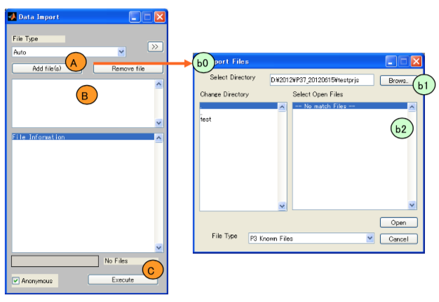
実験データをインポートするとメインウィンドウは下記のようになります。
## 注意 ##
Normal モードになっていない場合は Setting メニューの P3 Mode から Normal Mode を選択してください
最初に、実験データから読み込んだ解析データを１つデータリストボックス (A)から選択します。 次に解析手順をRecipeポップアップメニュー(B)から選びます。ここではYamada2018SciRepを選択します。 Yamada2018SciRepの概略説明がDescriptionリストボックス (C)に示されます。 最後に Draw ボタン(D)を押し、結果を描画します。

なお、”Yamada2018SciRep”の 実行には MATLAB signal processing ツールボックスで提供される関数、 butterworth が必要になります。
Draw 結果の例を示します。データの種類(Oxy/Deoxyなど)、刺激の種類(Mark)を選択するGUI(A)や、チャンネルの詳 細な情報 (B)、トポグラフィ画像 (C)が表示されています。
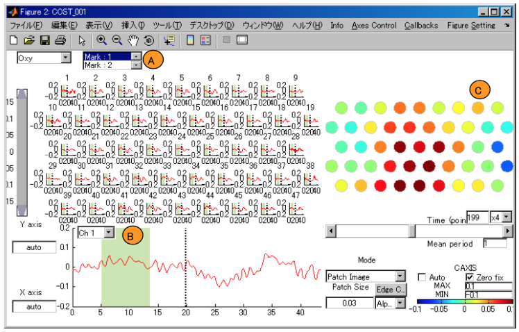
なお、Yamada2018SciRep の解析の概略説明は下記の通りです。
## Yamada2018SciRep:解析内容##
191129
# Summary
課題は 2 種類(左手餌取り: 1, 右手餌取り: 2);各条件 75 回を交互に試行
課題間時間 20秒以上
3次の多項式フィッティングによってベースライン変動の除去
0.7HzのLow Pass Filtering によってノイズ除去
刺激開始前 5 秒間、刺激開始後 30 秒間からなる 35 秒を用いてブロック化
# Information
Tag: Yamada, 2018 SciRep
Title: Functional near-infrared spectroscopy for monitoring macaque cerebral motor activity during voluntary movements without head fixation
Authors: Yamada T, Kawaguchi H, Kato J, Matsuda K & Higo N
Journal: Scinentific Reports 2018 Aug 09;8:1194.
# Description of Recipe
* Both Oxy-Hb and Deoxy-Hb signals were used in this study.
1. Baseline correction (Continuous)
- Degree: 3
- UnFitPeriod: N/A
2. Bandpass filtering
- Filter Function: ButterWorth
- Dimension for butter: 4
- Filter Type: LowPassFilter
- Low-Pass Filter [Hz]: 0.7
3. Blocking
- Pre-task period: 5 [s]
- Post-task period: 15 [s]
- Using Marker: All
Open PoTATo では解析手順(レシピ)を編集・保存することで、自由度の高い再利用可能な解析ができます。ここでは Open PoTATo の Research モード内の解析準備機能”Preprocess”を利用します。この例では1つの実験データのみに注目し、ノイズ除去やデータの切り取りなどを行います。
起動および実験データの読み込みは完了しているものとします。起動方法および実験データの読み込みに関しては解析してみようをご参照ください。
ここでは解析準備としてよく行われる例を説明します。本ステップガイドの解析は多くの実験データに適用可能です。
Open PoTATo を Research モードに変更してみましょう。 変更するにはメインウィンドウの Setting メニュー、P3 MODE から、Research Mode を選択してください。

次に Open PoTATo を解析準備状態に設定します。
Research モ ード 画面 の Preトグルボタン (A) を押します。 そうする と 解析準備状態 (Preprocess)に移行し Preトグルボタンの表示が Preprocessに変わります。
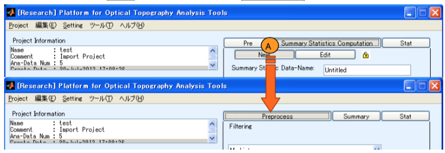
Preprocessでは左側のリストボックスで選択した解析データに対して、解析手順(Recipe)を設定します。
Preprocess におけるメインウィンドウ右側に、選択中の実験データに対する解析手順(Recipe)の設定・編集画面が表示されます。 本ステップガイドでは、以下の２つの処理を行うレシピを作成します。
ノイズ除去のために周波数フィルタを設定します。フィルタの追加はフィルタポップアップメニュー(A)から追加するフィルタとして“Band Filter”を選択し、Add ボタン (B)を押します。
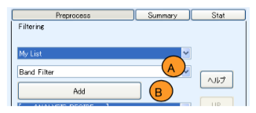
このとき Band Filter のパラメータ 設定ウィンドウが表示されます。フィルタのタイプとしてはFFTを用 い た 周波数フィルタの、Bandpass Filter(A) を選びます。 また Low-Pass (B)を 0.8 から 0.5 に変更します。このとき、フィルタリング前後の波形などを画面で確認できます。最後にOKボタン (C)を押します。
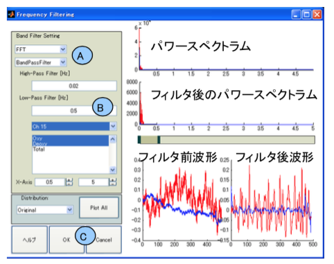
その結果、レシピを示すリストボックス (C)にBand Filterが追加されます。設定したパラメータは “>”以降に記載されています。

次に複数の刺激を持つ “連続データ”を刺激区間毎 取り出した“区間データ”に変換します。フィルタポップアップメニューから追加するフィルタとして“Blocking”を選択し、 Addボタンを押します。 そうすると設定画面が表示されるので、このままOKを押 します。

この解析は以下のような処理になります。
例えば、”連続データ”として2回の刺激をもつデータが存在したとします。
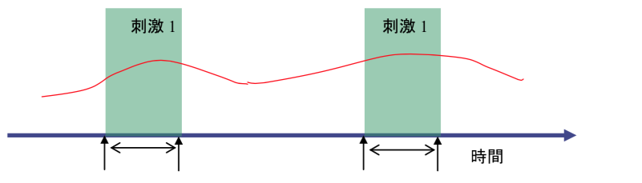
この２つの刺激を含む連続なデータを、設定に従い刺激毎に２つに分けます。

この区間に分けたデータ1つ1つをブロックと呼び、以降の処理はブロック単位で行います。
結果を Draw ボタンで結果を確認したところ下図のように、10 秒間に2, 3の山をもつノイズが見られました。そこで周波数フィルタで 0.2 より高い周波のデータもカッ トするよう変更します。
### 注意 ###
ここでは便宜上ノイズとしています。 実際にノイズかどうかは検証が必要です。

最初にレシピ情報リストボックス (A)から、周波数フィルタであるBand Filterを選択します。次に、Changeボタン (B)を押します。
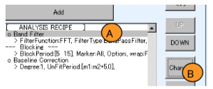
その結果、再度パラメータ設定ウィンドウが開かれる のでパラメータ設定ウィンドウの Low-Pass を 0.5 から 0.2 に変更し、0.2 より低い周波数のみ有効にします。
結果、ノイズが除去された波形が得られました。
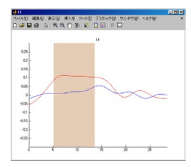
### Tips ###
フィルタの順序設定は”UP”、“Down”にて変更できます。 レシピはロード・セーブボタンによりファイルに保存出来ます。 解析の詳細内容を見たい場合、実行手順をスクリプト M-ファイルに変換出来ます。解析方法を公開しているフィルタはこの機能によりソースコードを参照できます。